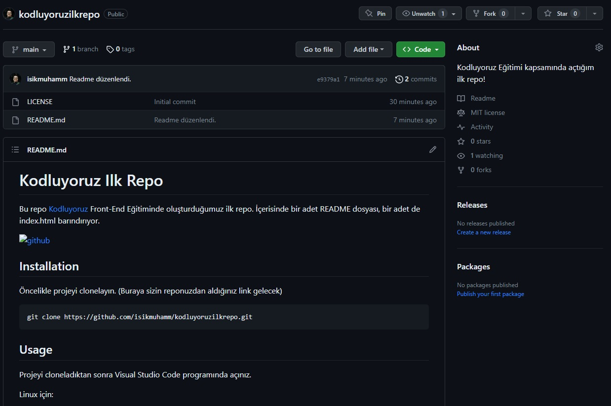

Burada, readme dosyasında yazdığımız bilgileri HTML olarak gösterdim.
Bu repo Kodluyoruz Front-End Eğitiminde oluşturduğumuz ilk repo. İçerisinde bir adet README dosyası, bir adet de index.html barındırıyor.
Öncelikle projeyi clonelayın. (Buraya sizin reponuzdan aldığınız link gelecek)
git clone https://github.com/isikmuhamm/kodluyoruzilkrepo.git
Projeyi cloneladıktan sonra Visual Studio Code programında açınız.
Linux için:
cd kodluyoruzilkrepo
code .
Pull requestler kabul edilir. Büyük değişiklikler için, lütfen önce neyi değiştirmek istediğinizi tartışmak için bir konu açınız.